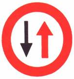

شاخصات (إشارات) الإرشاد
ب-1

مغلق أمام جميع المركبات بما في ذلك عربات اليد (من كلا الاتجاهين)
ب-2

مغلق أمام جميع المركبات بما في ذلك عربات اليد (شارع باتجاه واحد)
ب-3

ممنوع الاستدارة نحو اليسار
ب-6

ممنوع الاستدارة إلى اليسار للسير في الاتجاه المعاكس
ب-7
أعط حق الأولوية في الطريق الضيقة لحركة السير المقابلة
ب-8

ممنوع التجاوز أو العبور عن مركبة ميكانيكية تسير على أكثر من عجلتين في نفس اتجاه السير
ب-9
نهاية مقطع الطريق الذي يسري عليه قيد التجاوز
ب-10

لا يجوز لمركبة تجارية يزيد وزنها الإجمالي المسموح به عن 4 أطنان أن تتجاوز أو أن تمر عن مركبة ميكانيكية تسير على اكثر من عجلتين
ب-11
نهاية مقطع الطريق الذي يسري عليه قيد التجاوز
ب-12

ممنوع دخول المركبات الميكانيكية باستثناء الدراجة النارية بدون عربة جانبية
ب-13

ممنوع دخول الدراجات النارية
ب-14

ممنوع الدخول جميع المركبات الميكانيكية
ب-15
ممنوع دخول المركبات الميكانيكية التجارية التي يزيد وزنها الإجمالي المسموح به عما هو مسجل في الشاخصة
ب-16
ممنوع دخول جميع المركبات التي يزيد وزنها الإجمالي المسموح به عما هو مسجل في الشاخصة
ب-17

ممنوع دخول مركبة وحمولتها والتي يزيد عرضها عما هو مسجل في الشاخصة
ب-18
ممنوع دخول مركبة وحمولتها والتي يزيد ارتفاعها عما هو مسجل في الشاخصة
ب-20

سرعة خاصة : ممنوع السير بسرعة تزيد عن عدد الكم/ساعة المسجل في الشاخصة
ب-21
نهاية المقطع الذي فيه السرعة الخاصة
ب-24
الدخول إلى طريق أو طرق بلدية
ب-25
نهاية الطريق أو الطرق البلدية
ب-28

ممنوع وقوف مركبة في الطريق في الجهة التي أُقيمت فيها الشاخصة
ب-29

ممنوع الوقوف والتوقف في الطريق في الجهة التي أُقيمت فيها الشاخصة إلا لتنفيذ أمر قانوني
ب-30
ممنوع وقوف مركبة تجارية يزيد وزنها الإجمالي المسموح به عن 10000كغم في المنطقة التي أُقيمت في بدايتها الشاخصة
ب-31

نهاية المنطقة التي يُمنع فيها وقوف مركبة تجارية يزيد وزنها الإجمالي المسموح به عن 10000كغم
ب-32

نهاية المنطقة التي يُمنع فيها الوقوف أو التوقف (إلغاء الشاخصتين رقم : ب-28 و ب-29)
ب-33

الدخول إلى منطقة يحظر فيها دخول مركبة تعليم السواقة أثناء التعليم ما عدا الباص
ب-34
نهاية المنطقة التي يحظر فيها دخول مركبة تعليم السواقة أثناء التعليم
ب-35
يجوز السفر في الشارع أو في المسلك للقطار الخفيف وللباص والصالون العمومي وللمركبات التي تنقل على الأقل عدد الركاب المذكور في الشاخصة
ب-36
أعطِ حق الأولوية لحركة السير في الطريق القاطعة أمامك
ب-37
قف ! وأعطِ حق الأولوية لحركة السير في الطريق القاطعة أمامك
ب-38
قف ! (شاخصة متنقلة)
ب-39
تقدم بحذر (شاخصة متنقلة)
ب-41

سر إلى اليسار من أمام الشاخصة إذا كان السهم باللون الأصفر يدل على اتجاه السير للمواصلات العمومية فقط
ب-43
سر إلى اليسار من خلف الشاخصة اذا كان السهم باللون الأصفر يدل على اتجاه السير للمواصلات العمومية فقط
ب-44

سر إلى الأمام (إذا كان السهم مائلاً فسر باتجاه السهم) إذا كان السهم باللون الأصفر يدل على اتجاه السير للمواصلات العمومية فقط
ب-46
سر إلى اليسار أو إلى الأمام إذا كان السهم باللون الأصفر يدل على اتجاه السير للمواصلات العمومية فقط
ب-47

سر إلى اليمين أو إلى اليسار إذا كان السهم باللون الأصفر يدل على اتجاه السير للمواصلات العمومية فقط
ب-48
أعطِ حق الأولوية لحركة السير القاطعة طريقك والتي تسير حول الدوار واعبر الدوار من جانبه الأيمن
ب-49

يجوز عبور المكان الموسوم بهذه الشاخصة من اليمين أو من اليسار إذا كان السهم باللون الأصفر يدل على اتجاه السير للمواصلات العمومية فقط
ب-51
اعبر المكان الموسوم بالشاخصة من جانبه الأيسر
ب-52

طريق للمركبات الميكانيكية فقط
ب-53
طريق للمركبات الميكانيكية التي تستطيع ويجوز لها السير بسرعة لا تقل عن ما هو مسجل في الشاخصة بالكم/ساعة
ب-54
الدخول إلى طريق سريعة : ممنوع دخول المشاة والدراجات الهوائية والمركبات البطيئة وعربات اليد والحيوانات ولكل مركبة لا تستطيع ولا يجوز لها السير بالسرعة المذكورة في الشاخصة ب-53
ب-55
نهاية الطريق السريعة
ب-57

مكان إنزال واصعاد الركاب للصالون العمومي بدون انتظار
ب-58
محطة صالون عمومي : ممنوع وقوف أو توقف أية مركبة أخرى باستثناء إنزال الركاب
ب-59

نهاية منطقة محطة الصالون العمومي
ب-60
ممنوع دخول التراكتورات ومركبات العمل
ب-61
ممنوع دخول الحيوانات أو العربات التي تجرها الحيوانات
ب-62
ممنوع دخول الدراجات الهوائية
ب-63
سبيل للدراجات الهوائية فقط
ب-63 أ
سبيل للدراجات الهوائية وللمشاة فقط
ب-63 ب

سبيلان منفردان للدراجات الهوائية وللمشاة فقط
ب-64

ممنوع دخول المشاة بما في ذلك طرف الطريق
ب-65
سبيل للمشاة فقط
ب-66
ممنوع دخول مركبة تنقل مواد خطرة والملزمة بوسم بموجب القانون